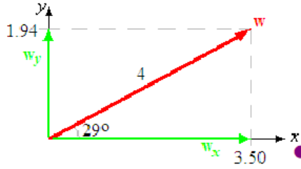
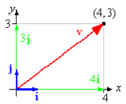
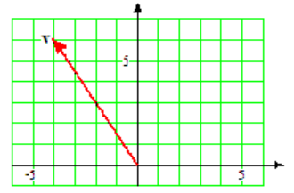
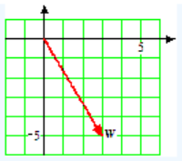
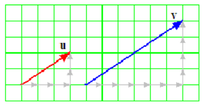
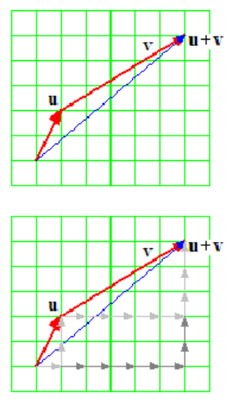
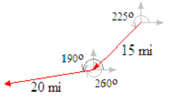
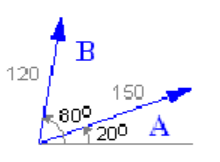
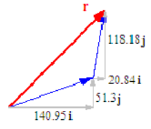

In Section 9.1 we saw how to resolve a vector into horizontal and vertical components. Thus, every vector can be expressed as the sum of a horizontal vector and a vertical vector.
Example9.22
A vector \(\bf{w}\) has magnitude 4 and direction \(\theta =29\degree\text{,}\) where \(\theta\) is measured counter-clockwise from the positive \(x\)-axis. Express \(\bf{w}\) as the sum of a horizontal vector, \(\bf{w_x}\text{,}\) and a vertical vector, \(\bf{w_y}\text{.}\)
Solution
The components of \(\bf{w}\) are given by
\begin{equation*}
w_x = \|{\bf{w}}\| \cos \theta = 4\cos 29\degree = 3.50
\end{equation*}
\begin{equation*}
w_y = \|{\bf{w}}\| \sin \theta = 4\sin 29\degree = 1.94
\end{equation*}

Then \(\bf{w} = + \bf{w_x} + \bf{w_y}\text{,}\) where \(\bf{w_x}\) is a horizontal vector of magnitude 3.50, and \(\bf{w_y}\) is a vertical vector of magnitude 1.94. See the figure above.
Exercise9.23
A vector \(\bf{u}\) has magnitude 2 and direction \(\theta =116\degree\text{,}\) where \(\theta\) is in standard position. Express \(\bf{u}\) as the sum of a horizontal vector, \(\bf{u_x}\text{,}\) and a vertical vector, \(\bf{u_y}\text{.}\)
SubsectionUnit Vectors
It is often useful to describe a vector by giving its horizontal and vertical components, instead of its magnitude and direction. To make the notation easier, we give names to the vectors of length 1 that point in the \(x\)- and \(y\)-directions. A vector of magnitude 1 is called a unit vector. We can have unit vectors in any direction, but the unit vector in the \(x\)-direction is denoted by \(\bf{i}\text{,}\) and the unit vector in the \(y\)-direction is called \(\bf{j}\text{,}\) as shown below.
By taking scalar multiples of \(\bf{i}\) and \(\bf{j}\text{,}\) we can describe any vector that lies in the directions of the coordinate axes. For example, \(4{\bf{i}}\) represents the vector of magnitude 4 pointing in the \(x\)-direction, and \(3{\bf{j}}\) represents the vector of magnitude 3 pointing in the\(y\)-direction. And by adding multiples of \(\bf{i}\) and \(\bf{j}\text{,}\) we can represent any vector we like. The vector \({\bf{v}} = 4{\bf{i}} + 3{\bf{j}}\) is shown at right.

Because the components of the vector are chosen to align with the coordinate system, we call this the coordinate form of the vector.
Coordinate Form of a Vector
The vector
\begin{equation*}
{\bf{v}} = a{\bf{i}} + b{\bf{j}}
\end{equation*}
is the vector whose horizontal component is \(a\) and whose vertical component is \(b\text{.}\)
The coordinate form of the vector \(\bf{w}\) in the previous example is \({\bf{w}} = 3.50{\bf{i}} + 1.94{\bf{j}}\text{.}\)
Example9.24
State the coordinate form of the vector shown at right.

SolutionFrom its base to its tip, the vector extends 4 units in the negative \({\bf{i}}\) direction and 6 units in the \({\bf{j}}\) direction. Thus, \({\bf{v}} = -4{\bf{i}} + 6{\bf{j}}\text{.}\)
Exercise9.25
State the coordinate form of the vector shown at right.

SubsectionConverting Between Geometric and Coordinate Form
It is a simple matter to find the magnitude and direction of a vector given in coordinate form. The vector \({\bf{v}} = 4{\bf{i}} + 3{\bf{j}}\) has magnitude
\begin{equation*}
\|{\bf{v}}\| = \sqrt{3^2 + 4^2} = \sqrt{25} = 5
\end{equation*}
and direction \(\theta = \tan^{-1}(\dfrac{3}{4}) = 36.9\degree\text{.}\) Thus, we can readily convert vectors from geometric form to coordinate form or vice versa.
Comparing the Geometric and Coordinate Forms of a Vector
Suppose that the vector \({\bf{v}}\) has magnitude \(\|{\bf{v}}\|\) and points in the direction of the angle \(\theta\) in standard position. If \({\bf{v}}\) has the coordinate form \({\bf{v}} = a{\bf{i}} + b{\bf{j}}\text{,}\) then \begin{align*} a \amp = \|{\bf{v}}\| \cos \theta \amp \amp \amp \|{\bf{v}}\| \amp = \sqrt{a^2 + b^2}\\ b \amp = \|{\bf{v}}\| \sin \theta \amp \amp \amp \tan \theta \amp = \dfrac{b}{a}\\ \end{align*}
Example9.26
- Find the geometric form of the vector \({\bf{w}} = -3{\bf{i}} -2{\bf{j}}\text{.}\)
- Find the coordinate form of the vector whose magnitude is 5 and whose direction is the angle \(\theta = 135\degree\text{.}\)
Solution
- The magnitude of \({\bf{w}}\) is \(\|{\bf{w}}\| = \sqrt{(-3)^2 + (-2)^2} = \sqrt{13}\text{.}\) The direction satisfies the equation \(\tan \theta = \dfrac{-2}{-3}\text{.}\) Because the point \((-3,-2)\) lies in the third quadrant, we know that \(\theta\) must be a third quadrant angle. Thus, \(\theta = \arctan \dfrac{2}{3} + 180\degree = 213.69\degree\text{.}\)
- The coordinates of the vector are given by
\begin{equation*}
a = 5\cos 135\degree = \dfrac{-5}{\sqrt{2}},~~~~ b = 5\sin 135\degree = \dfrac{5}{\sqrt{2}}
\end{equation*}
so the coordinate form is \({\bf{w}} = \dfrac{-5}{\sqrt{2}}{\bf{i}}+ \dfrac{5}{\sqrt{2}}{\bf{j}}\text{.}\)
Exercise9.27
Find the geometric form of the vector \({\bf{F}} = -6{\bf{i}}+8{\bf{j}}\text{.}\)
SubsectionScalar Multiples of Vectors in Coordinate Form
Scalar multiplication is easy to compute in coordinate form. This is really a consequence of the fact that the sides of similar triangles are proportional.
The figure at right shows the vectors \({\bf{u}} = 3{\bf{i}}+2{\bf{j}}\) and \({\bf{v}} = 2{\bf{u}}\text{.}\) The vector \({\bf{v}}\) is twice as long as \({\bf{u}}\) and points in the same direction as \({\bf{u}}\text{.}\) You can see that each component of \({\bf{v}}\) is twice the corresponding component of \({\bf{u}}\text{,}\) so that \({\bf{v}} = 6{\bf{i}}+4{\bf{j}}\text{.}\)

Scalar Multiplication in Coordinate Form
If \({\bf{v}} = a{\bf{i}} + b{\bf{j}}\) and \(k\) is a scalar, then
\begin{equation*}
k{\bf{v}} = ka{\bf{i}} + kb{\bf{j}}
\end{equation*}
In other words, to find a scalar multiple of a vector in coordinate form, we multiply each component by the scalar.
Example9.28
The vector \({\bf{v}}\) has coordinate form \({\bf{v}} = 4{\bf{i}} -7{\bf{j}}\text{.}\) Find the coordinate form for the vector \({\bf{w}} = -\dfrac{1}{2}{\bf{v}}\text{.}\)
SolutionWe multiply each component of \({\bf{v}}\) by \(-\dfrac{1}{2}\) to get \({\bf{w}} = -2{\bf{i}} +\dfrac{7}{2}{\bf{j}}\text{.}\)
Exercise9.29
Find the coordinate form for the vector \({\bf{u}} = 3{\bf{v}}\text{,}\) where \({\bf{v}} = -12{\bf{i}}+15{\bf{j}}\text{.}\)
If we divide a non-zero vector \({\bf{v}}\) by its own length, we create a unit vector that points in the same direction as \({\bf{v}}\text{.}\) (Dividing a vector by a scalar \(k\) is the same as multiplying the vector by \(\dfrac{1}{k}\text{.}\))
Example9.30
Find a unit vector pointing in the same direction as \({\bf{v}} = 2{\bf{i}}-4{\bf{j}}\text{.}\)
SolutionWe first compute the magnitude of \({\bf{v}}\text{.}\)
\begin{equation*}
\|{\bf{v}}\| = \sqrt{2^2 + (-4)^2} = \sqrt{20} = 2\sqrt{5}
\end{equation*}
Next we multiply \({\bf{v}}\) by the reciprocal of its length. The unit vector in the same direction as \({\bf{v}}\) is then \begin{align*} {\bf{u}} = \dfrac{1}{\|{\bf{v}}\|}{\bf{v}} \amp = \dfrac{1}{2\sqrt{5}}(2{\bf{i}}-4{\bf{j}})\\ \amp = \dfrac{1}{2\sqrt{5}} \cdot 2{\bf{i}} + \dfrac{1}{2\sqrt{5}} \cdot (-4{\bf{j}}) = \dfrac{1}{\sqrt{5}}{\bf{i}}+\dfrac{-2}{\sqrt{5}}{\bf{j}}\\ \end{align*}
By computing its length, you can check that the vector u found in Example 5 really is a unit vector.
\begin{equation*}
\|{\bf{u}}\| = \sqrt{(\dfrac{1}{\sqrt{5}})^2 + (\dfrac{-2}{\sqrt{5}})^2}=\sqrt{\dfrac{1}{5} + \dfrac{4}{5}} = \sqrt{1} 1
\end{equation*}
Once we have a unit vector \({\bf{u}}\) that points in a given direction, we can create a vector of any length in that direction, simply by scaling \({\bf{u}}\) by the length we desire. For example, the vector of length 10 pointing in the same direction as \({\bf{v}}\) in the previous example is \begin{align*} 10{\bf{u}} = 10 \cdot (\dfrac{1}{\sqrt{5}}{\bf{i}} + \dfrac{-2}{\sqrt{5}}{\bf{j}}) \amp = 10 \cdot \dfrac{1}{\sqrt{5}}{\bf{i}} + 10 \cdot \dfrac{-2}{\sqrt{5}}{\bf{j}}\\ \amp = 2\sqrt{5} {\bf{i}} - 4\sqrt{5} {\bf{i}}\\ \end{align*}
Scaling a Vector
A unit vector \({\bf{u}}\) in the direction of \({\bf{v}}\) is given by \({\bf{u}} = \dfrac{1}{\|{\bf{v}}\|} {\bf{v}}.\)
A vector \({\bf{w}}\) of length \(k\) in the direction of \({\bf{v}}\) is given by \({\bf{w}} = \dfrac{k}{\|{\bf{v}}\|} {\bf{v}}.\)
Exercise9.31
Find a unit vector \({\bf{u}}\) and a vector \({\bf{w}}\) of length 10 pointing in the same direction as \({\bf{v}} = -{\bf{i}}+3{\bf{j}}\text{.}\)
SubsectionAdding Vectors in Coordinate Form
It is also easy to add vectors in coordinate form. The figure at right shows the sum of \({\bf{u}} = {\bf{i}}+2{\bf{j}}\) and \({\bf{v}} = 5{\bf{i}}+3{\bf{j}}\text{.}\) Remember that we add two vectors by following the first vector by the second. The vector sum describes the path \begin{align*} 1~ \text{unit in the \(x\)-direction, then}\\ 2~ \text{units in the \(y\)-direction, then}\\ 5~ \text{units in the \(x\)-direction, then}\\ 3~ \text{units in the \(y\)-direction. }\\ \end{align*} But we arrive at the same endpoint by traveling \begin{align*} 1+5=6~ \text{units in the \(x\)-direction, then}\\ 2+3=5~ \text{units in the \(y\)-direction.}\\ \end{align*}

The resultant vector has components that are just the sums of the components of the vectors \({\bf{u}}\) and \({\bf{v}}\text{.}\) To add two vectors in coordinate form, we add the corresponding components.
Sum of Vectors in Coordinate Form
If \({\bf{u}} = a{\bf{i}}+b{\bf{j}}\) and \({\bf{v}} = c{\bf{i}}+d{\bf{j}}\text{,}\) then
\begin{equation*}
{\bf{u}} + {\bf{v}} = (a + c){\bf{i}}+ (b + d){\bf{j}}
\end{equation*}
Example9.32
Kyle flew 15 miles southwest and then 20 miles on a bearing of \(260\degree\text{.}\) What is his current position relative to his starting point?
SolutionA sketch of Kyle's journey is shown below. We begin by converting the vector for each leg of his journey into coordinate form.
\begin{align*} v_x \amp = 15\cos 225\degree = -10.607\\ v_y \amp = 15\sin 225\degree = -10.607\\ w_x \amp = 20\cos 190\degree = -19.696\\ w_y \amp = 20\sin 190\degree = -3.473\\ \end{align*}

Thus,
\begin{equation*}
{\bf{v}} = -10.607{\bf{i}}-10.607{\bf{j}}~~~~\text{and}~~~~{\bf{w}} = -19.696{\bf{i}}-3.473{\bf{j}}
\end{equation*}
We find the resultant vector, \({\bf{r}}\text{,}\) by adding \({\bf{v}}\) and \({\bf{w}}\text{.}\) \begin{align*} {\bf{r}} \amp = (-10.607 - 19.696){\bf{i}} + (-10.607 - 3.473){\bf{j}}\\ \amp = -30.303{\bf{i}}-14.08{\bf{j}}\\ \end{align*} Kyle's position vector is \({\bf{r}}=30.303{\bf{i}}-14.08{\bf{j}}\text{,}\) or about 30.3 miles west and 14.1 miles south of his starting position.
Exercise9.33
Arianna's yacht heads \(10\degree\) west of north at a speed of 20 kilometers per hour relative to the water. However, the water is moving \(70\degree\) east of north at 4 kilometers per hour. What is Arianna's velocity relative to land?
The coordinate form is especially efficient if we want to add more than two vectors.
Example9.34
While exploring an abandoned cottage in the woods, you discover an old map showing the location of a buried treasure.
- From the cottage, go 10 km in the direction \(70\degree\text{.}\)
- From that point, go 12.8 km in the direction \(348\degree\text{.}\)
- Finally, go 9.5 km in the direction \(129\degree\text{.}\)
You wonder if the directions will lead you safely to the treasure. You draw vectors to illustrate the path described by the directions, as shown in the figure.
Instead of following the map directions, you plan to fly by helicopter from the abandoned cottage directly to the treasure, but you will need to know the correct heading and distance to fly. Draw the vector for the net displacement from the cottage to the treasure, and give its length and direction.
SolutionThe helicopter's flight plan is the vector sum of the three vectors \({\bf{u}}\text{,}\) \({\bf{v}}\text{,}\) and \({\bf{w}}\) shown in the figure. To find their sum, we resolve each of the three vectors into its components. In coordinate form, the three displacement vectors are \begin{align*} {\bf{u}} \amp = (10\cos 70\degree){\bf{i}} + (10\sin 70\degree){\bf{j}} = 3.42{\bf{i}} + 9.40{\bf{j}}\\ {\bf{v}} \amp = (12.8\cos 348\degree){\bf{i}} + (12.8\sin 348\degree){\bf{j}} = 12.52{\bf{i}} - 2.66{\bf{j}}\\ {\bf{w}} \amp = (9.5\cos 129\degree){\bf{i}} + (9.5\sin 129\degree){\bf{j}} = -5.98{\bf{i}} + 7.38{\bf{j}}\\ \end{align*} The net displacement is given by the resultant vector, \({\bf{r}}\text{.}\) We add the corresponding components of\({\bf{u}}\text{,}\) \({\bf{v}}\text{,}\) and \({\bf{w}}\text{.}\) \begin{align*} {\bf{r}} \amp = (3.42{\bf{i}} + 9.40{\bf{j}})+(12.52{\bf{i}} - 2.66{\bf{j}}) + (-5.98{\bf{i}} + 7.38{\bf{j}})\\ \amp = (3.42+12.52-5.98){\bf{i}} + (9.40-2.66+7.38){\bf{j}} = 10{\bf{i}} + 14.12{\bf{j}} \end{align*}
The treasure is at the point 10 km east and 14.12 km north of the cottage. To find the flight plan for the helicopter, we compute the magnitude and direction of the vector \({\bf{r}}\text{.}\) \begin{align*} \|{\bf{r}}\| \amp = \sqrt{10^2 + 14.12^2} = 17.3\\ \tan \theta \amp = \dfrac{14.12}{10} = 1.412\\ \theta \amp = \tan^{-1}(1.412) = 54.69\degree\\ \end{align*} Thus, the treasure is 17.3 km from the cottage, in the direction \(54.7\degree\) from east. The helicopter's flight path is shown at right.
Exercise9.35
From your campsite you hike 1.6 km in the direction \(175\degree\text{,}\) then 0.8 km in the direction \(65\degree\text{,}\) and finally 1.2 km in the direction \(350\degree\text{.}\)
- Draw a diagram for your hike, using vectors to represent each of the three segments. Use ae grid in which 1 square represents 0.1 km.
- Resolve each vector into components, and determine your location after your hike.
SubsectionForce
When you push or pull on something, you are exerting a force on the object. For example, the weight of an object is actually a force, the result of gravity pulling the object towards the earth. A force has magnitude (measured in pounds) and direction, so force is a vector quantity. A force applied to an object causes the object to accelerate in the direction of the force.
When two or more forces act simultaneously on an object, the object moves as if it were acted on by the sum of the individual force vectors. The sum of all the forces acting on an object is called the resultant force.
Example9.36
Abe and Bart are trying to move a refrigerator by pulling on it with forces of 150 pounds and 120 pounds respectively, as shown in figure (a). What is the resulting force on the refrigerator, and in what direction will it move?

SolutionWe write each force in its coordinate form. \begin{align*} {\bf{A}} \amp = (150\cos 20\degree){\bf{i}} + (150\sin 20\degree){\bf{j}} = 140.95{\bf{i}} + 51.30{\bf{j}}\\ {\bf{B}} \amp = (120\cos 80\degree){\bf{i}} + (120\sin 80\degree){\bf{j}} = 20.84{\bf{i}} +118.18{\bf{j}}\\ \end{align*} Next, we add the forces applied by Abe and Bart to find the resultant force, \({\bf{r}}={\bf{A}}+{\bf{B}}\text{.}\) \begin{align*} {\bf{r}} \amp = (140.95{\bf{i}} + 51.30{\bf{j}})+(20.84{\bf{i}} -+118.18{\bf{j}})\\ \amp = 161.75{\bf{i}} + 169.48{\bf{j}} \end{align*}
The magnitude of the resultant force is
\begin{equation*}
\|{\bf{r}}\| = \sqrt{161.75^2 + 169.48^2} = 234.28
\end{equation*}
and the direction of the force is given by
\begin{equation*}
\tan^{-1}(\dfrac{169.48}{161.75}) = 46.33\degree
\end{equation*}

The force exerted on the refrigerator is about 234 pounds, and it will move at an angle of \(46\degree\) from the horizontal segment shown in the figure.
Exercise9.37
Two tugboats pull on a barge in the river with forces \({\bf{u}} = 20{\bf{i}} + 8{\bf{j}}\) and \({\bf{v}} = 28{\bf{i}} -6{\bf{j}}\text{,}\) measured in thousands of pounds. In what direction will the barge move, and what is the magnitude of the force propelling it?
If vectors \({\bf{u}}\) and \({\bf{v}}\) have the same magnitude but opposite directions, then \({\bf{u}}+{\bf{v}}\) has zero magnitude and is called the zero vector. A zero displacement vector means that the object started and ended in the same place; a zero velocity vector means that the object is not moving. We denote the zero vector by \({\bf{0}}\text{,}\) so \(\|{\bf{0}}\| = 0\text{.}\)
The vector that has the same magnitude as \({\bf{v}}\) but the opposite direction is called the opposite of \({\bf{v}}\) and denoted by \({-\bf{v}}\text{.}\) Then
\begin{equation*}
{\bf{v}}+{-\bf{v}}={\bf{0}}
\end{equation*}
If the sum of the forces acting on an object is \({\bf{0}}\text{,}\) the forces are said to be in equilibrium, and the object will remain stationary.
Example9.38
Recall the refrigerator in the previous example. Carl does not want Abe and Bart to move the refrigerator. How hard must Carl pull so that the refrigerator remains motionless?
SolutionThe force \({\bf{C}}\) that Carl applies must equal in magnitude the sum of the forces applied by Abe and Bart, but point in the opposite direction. That is,
\begin{equation*}
{\bf{C}} = {-\bf{r}} = -({\bf{A}}+{\bf{B}})
\end{equation*}
So Carl must pull with 234.3 pounds in the direction \(180\degree + 46.33\degree = 226.33\degree\text{.}\)
Exercise9.39
Suppose that \({\bf{u}}+{\bf{v}}+{\bf{w}}={\bf{0}}\text{,}\) and \({\bf{u}} = -8{\bf{i}} + 32{\bf{j}}, ~~ {\bf{v}} = 14{\bf{i}} -26{\bf{j}}\text{.}\) What is the coordinate form of vector \({\bf{w}}\text{?}\)